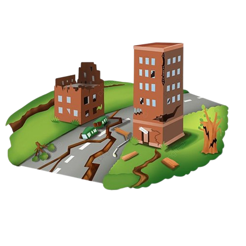

Earthquakes don't happen evenly across the planet.
Twenty-nine years of significant global earthquakes, mapped, gridded, and measured to show exactly where seismic activity concentrates, and how much that answer depends on how you draw the grid.

These five numbers describe the fixed, cited dataset below, not the Live Monitor globe, which pulls whatever USGS has recorded in the last 12 months.
A list of coordinates doesn't tell you where the risk is.
Plot a thousand earthquakes on a map and the eye naturally looks for clusters. But "looks clustered" isn't a number, and it isn't reproducible.
The problem
Two people can stare at the same globe of scattered points and disagree about which region is really the hotspot. A visual impression isn't a measurement.
The method
Divide the world into fixed grid cells, count events per cell, and rank them. Simple enough that anyone can check it, repeat it, or argue with it.
The tradeoff
The cell size you pick changes the answer. Most dashboards skip this part. The Method section below shows exactly how much it moves.
Every event, plotted where it happened.
Rotate and zoom freely. Switch between raw events and the concentration grid, and change the grid size to see how the hotspots shift.
| Date | Place | Magnitude | Class | Depth (km) | Tsunami flag |
|---|
How the concentration numbers were built.
Four steps, run once in Python before this page ever loads. Open any step to see what it actually does.
The source file has 1,000 rows. Column names get standardised, coordinates and magnitude get converted to numbers, and rows with missing or out-of-range coordinates get dropped. Two exact duplicate events get removed.
Each latitude and longitude pair becomes an actual Point geometry (GeoPandas, EPSG:4326), not just two numbers in a spreadsheet. Every point gets checked for validity and confirmed to sit inside real world bounds before anything gets plotted.
The globe gets divided into fixed-size cells (5°, 10°, and 20° versions were all built). Every event falls into exactly one cell. Cells get ranked by event count, and the top cell's share of all events becomes the headline concentration number.
This is the modifiable areal unit problem in practice: the same 998 points give a different "how concentrated is it" answer depending only on the ruler you use to measure it. Neither answer is wrong, they're measuring at different resolutions.
This dataset only contains significant earthquakes, magnitude 6.5 and above. A generic "below 3.0 / 3-4 / 4-5" scale would put every single row in one bucket, so the classes here are rebuilt to match the data actually present: 6.5–6.9, 7.0–7.4, 7.5–7.9, 8.0–8.9, and 9.0+.
The numbers behind the map.
Magnitude spread and events over time.
Magnitude distribution
How the 998 events split across the five rescaled magnitude classes.
625 of the 998 events (63%) sit in the lowest bucket, 6.5–6.9. Each class above it is rarer than the last, the same "small quakes vastly outnumber large ones" pattern seen globally, just scoped to this magnitude-6.5-and-up dataset.
Events per year
Annual count of significant earthquakes, 1995 to 2023.
Counts swing between 23 events (1998) and 53 (2013), averaging about 34 a year. There's a slight upward drift across the 29 years, but year-to-year noise is larger than the trend, and part of any drift could reflect better detection in later decades, not more earthquakes.
What the pattern does, and doesn't, tell you.
The busiest 10° cell in this dataset covers the Vanuatu and Solomon Islands region of the southwest Pacific. That's not a coincidence of this particular sample, it sits on the Pacific "Ring of Fire," where the Pacific Plate meets the Australian Plate and several smaller plates. Plate boundaries are where earthquakes concentrate globally, this dataset just makes that visible in numbers instead of a general statement.
No, and this is worth being direct about. Concentration here means event count per cell, not casualties, damage, or population exposure. A remote ocean region can rank high on event count while affecting almost no one. A single large event near a dense city can matter far more than a hundred events in open ocean. This map answers "where do events cluster," not "where is the danger."
Everything below magnitude 6.5. Small and moderate earthquakes are far more frequent than large ones, and excluding them means this map understates total seismic activity everywhere, not just in one region. It also can't say anything about detection bias in earlier decades of the range, older, more remote events were historically harder to record precisely than recent ones.
Because picking only one grid size hides a real limitation. A 5° grid gives a sharper, noisier picture. A 20° grid smooths detail into broad regions. Showing all three, with their actual numbers, is more honest than presenting a single figure as if it were the only possible answer.
Where this came from.
- Dataset
- "Earthquake", Faraz Rahman, Kaggle
- Original source
- U.S. Geological Survey (USGS) Earthquake Hazards Program
- License
- CC0 1.0: Public Domain Dedication (no attribution legally required; credited here for transparency)
- File used
- earthquake_95to23.csv, significant earthquakes, magnitude 6.5+, 1995–2023
- Raw rows
- 1,000
- Rows after cleaning
- 998 (2 exact duplicates removed)
- Live globe source
- USGS FDSN event query API, queried live for magnitude 6.0+ earthquakes in the past 12 months. This is a different selection method from the historical dataset above (which is a fixed file, magnitude 6.5+, 1995–2023), so the two will never match exactly, and that's expected.